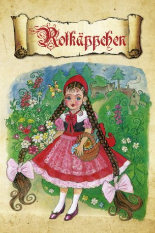

IMDB-Wertung: 5.9 / 10
IMDB-Wertung: 5.9 / 10  Metascore:
Metascore: 
 IMDB-Wertung: 5.9 / 10 Metascore:
Jahr: 1954
Dauer: 45 Minuten
FSK:
Land: West-Deutschland Studio: Jugendfilm-VerleihTonspuren:
Untertitel:
Auflösung: SD (920x720) Größe: 1208 MB
Genre: Komödie, Fantasy, Familie
Regisseur: Walter Janssen
Drehbuch: Jacob Grimm, Wilhelm Grimm, Konrad Lustig
Soundtrack: Giuseppe Becce
Darsteller:
Datei: X:\Märchen\Rotkäppchen (1954, FSK, 920x720).mkv seit 29.12.2018
Festplatte: Kinder-Filme+Trick
 Es gibt insgesamt 61 Filme in der Gruppe 'Märchen'
Es gibt insgesamt 61 Filme in der Gruppe 'Märchen'